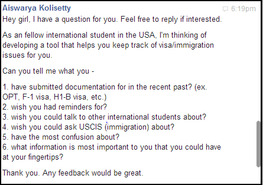

Alienship
A tool to help students move into careers on the student visa
The Context
Five years ago, I came (back) to the United States to pursue a degree in electrical and computer engineering. It wasn't my first stint in the USA; my family lived in New Jersey for 6 years when I younger. We moved back to Chennai, India because my dad's work visa expired, we didn't get to Greencard status, and my his parents were growing old.
I finished high school and came back to study at Olin College of Engineering. I managed to squeeze into our class of 85 and I was ready to take on a degree I didn't know anything about. Through the four year undergrad program, I was able to land internships in Belgium and in Palo Alto. I travelled home to India every 6 months too. Life was exciting.
Till that point, many companies often turned me away at career fairs for being international. But the real struggle came when it was time for a full-time job in senior year. I required to find a company that accepts international candidates and would sponsor my work visa.
After some searching, Ford was happy to have me join their Research division and I was happy to begin a career in the field of user experience. My job at Ford has been exciting, but I never imagined my immigration status would double the excitement. In the past year, I've applied urgently to a work visa (which I was unfotunate to miss this year) and two extensions for my student visa.
I can promise you that handling immmigration procedures can cause alarm and anxiety if left untracked. I went down that path and scrambling to get back on the timely path took a coordinated effort from my employer, college, and myself. Deadlines have to be watched, applications have to be planned months in advance, and the results can go either way. Plans B, C, and D need to be generated for alternative scenarios. This can be attributed to the fact that - we don't always know if we covered all needed documents, how long processing time will be, and how much progress the Immigration department has made.
To give you an idea of the various paths a student's immigration journey can take, below is a diagram of my past few years. Many students have taken a similar route, and some obtained a work visa and moved down a different path.
{kind=link}
The Initial Idea
The experiences of the past year have taught me lessons in planning, assembling, and adjusting to various circumstances thrown my way. I learned that not everyone is lucky to get the work visa, but that there are second chances. I learned that the HR at my company and college may interpret requirements differently, but that communication can take us forward. I learned that the Immigration department has their online resource, but many questions may still be left unanswered so we need to take our best guess.
I realized that the process of collating the documentation and mailing them to Immigration wasn't the hard part. This was relatively straightforward. But every single time, it was the sudden surprise - one or two weeks in advance - that I had to submit something very, very soon. My lack of mental prepardness was the obstacle. And so I thought about how I could mitigate it and be more aware of upcoming deadlines.
The idea is simple - a chronological reminder service. Let us input the date that a student will graduate from college. Counting the days and months ahead, we can mark the deadlines for their upcoming immigration/visa applications, alert the student in advance, point them to official links, and provide a brief description of my experience.

Note: This is an initial idea based on my personal experiences.. The journey simply starts here. Most international new graduates may not have the same pain points as I had. I plan to move forward with an open mind and a more user-driven design approach. After all, this is an idea that could end up entirely elsewhere.
Why Alienship
Okay, this is a working title. The idea came to me about a week ago and just made me smile. Over the past 5 years, I've visited India close to 10 times. It's a lot, but I'm also one of two daughters in our family and I'm always asked to visit (who can say no?). Each time I come back to the US, the immigration forms refer to me and other non-Americans as 'aliens.' And I always laugh. So I took the word citizenship, and made it alien + citizenship. That's how we arrived at Alienship. Like I said, working title.
The Process and Progress
Design methods suggest that you don't design for yourself. I took th liberty of violating that suggestion in the Initial Idea section. However, I am mindful that the suggestion holds some truth. Therefore, I decided to contact some of my international new graduate friends. Below is a screenshot of my Facebook Chat questionnaire to ten people on 09/04/14.

As I collect their stories of the immigration process, I can narrow down the critical needs and wants they had along the way. Some might be similar to mine, and others not at all. As I collect answers, I will start posting my conclusions here.
Phase I: User Research and Synthesis
Over the course of 2 weeks, I recieved responses from 9 of 13 friends I contacted with this survey. That success rate (for a voluntary survey) gave me hope that this is a compelling and difficult issue for those of us on student visas and work visas. I am synthesizing the 9 user interviews and how they answered each question.

My analysis should lead me to answer the following questions :
- What are the commonly shared pain points in the process?
- What suggestions do the users provide?
- Common words expressing emotion
- What they want at their fingertips
Next update will happen in a week, by 10/06/14. Summarized results will be up. Then, I will begin to design the information architecture for the app by providing the most demanded information at the most accessible locations.